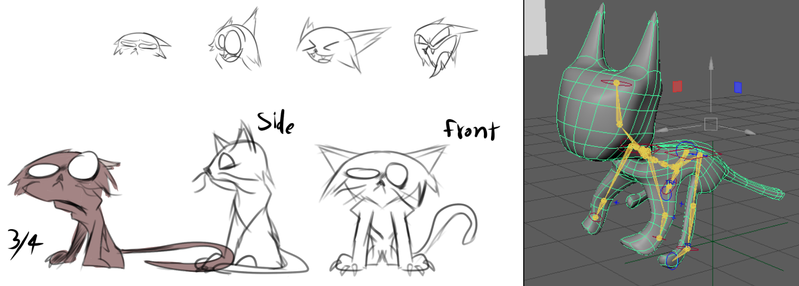
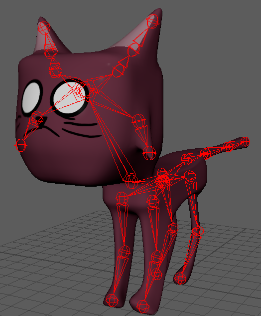
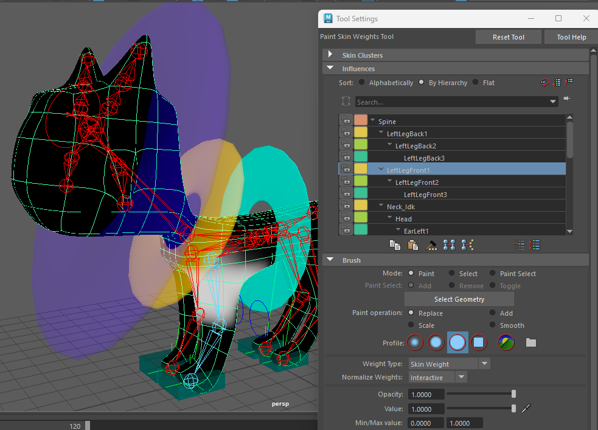
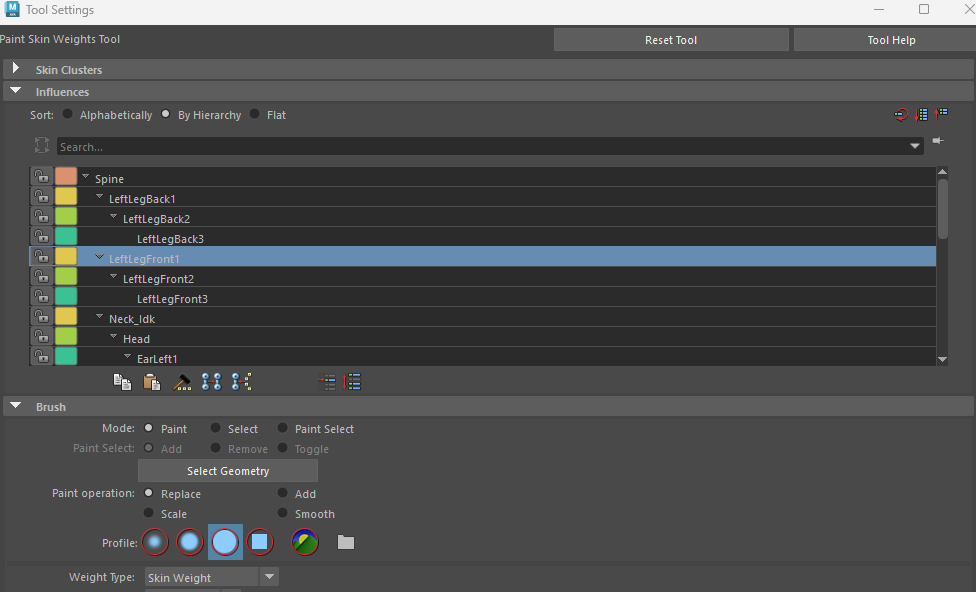
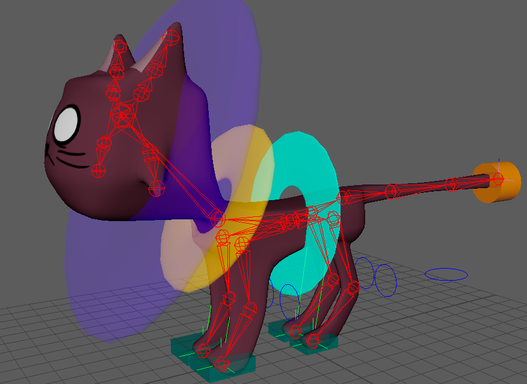
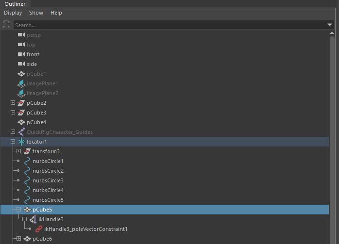
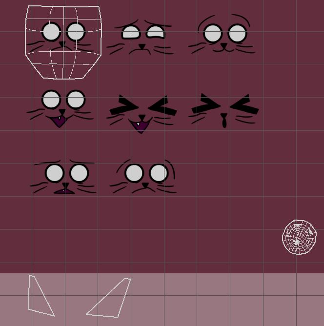
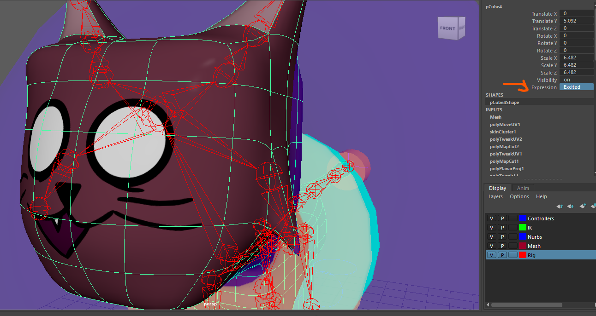
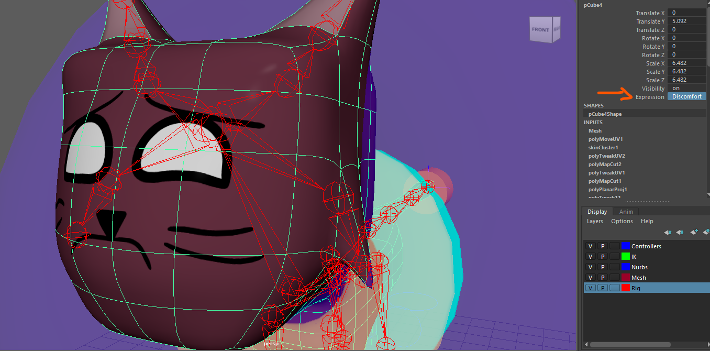
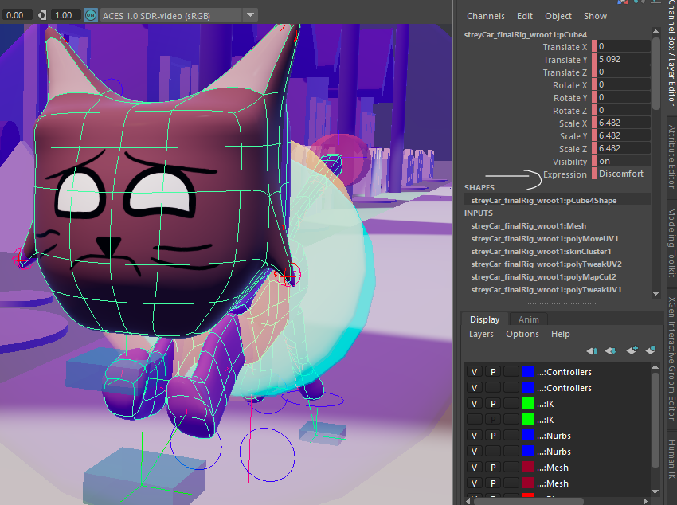

IAT343 Animated Film Project

Initial Concept & Research
This was the final project of IAT343 and was done in a group of 5 using mainly the Autodesk Maya software. The project itself was about creating a short story along with a short 3D animated film for it. Our story revolves around a cat who lives off of stealing mail from other people before turning a new leaf after seeing the consequences of his own actions. I ended up taking multiple roles in the production pipeline, but my highlight role for this project was being the lead technical animator which involved aspects such as rigging, UV editing and ensuring that the models work as intended.
In the initial sketches, the drawings I made were simple, but sufficient for me to learn how cats move in real life, allowing me to start with rigging the character in order to capture how cats move in real life, at least based on the limited skills I had at the time.

Character Rigging
After the cat's model was finished, I adjusted the bone placements to make the rig fit better with the model. During the production, I learned that Maya's Quick Rig feature was ineffective for non-humanoid models and I ended up having to take a more manual approach. Regardless of those limitations, I was content with the results.


Weight Painting
The weight painting process involved determining how much of the mesh is affected by each bone. Given the amount of bones on the cat, I ended up painting a certain weight on each bone. This process was crucial for ensuring natural deformation of the character during animation.


Animation Controllers
To make the animating process easier, I ended up adding inverse kinematics (IK) handles and animation controllers to the rigs for making bone selection much easier. These colorful controllers provided intuitive ways for animators to pose and animate the character.

Facial Expression System
One challenging aspect of the animation was the facial rigs. Because the characters had no mouths on their models, their textures included various facial expressions, having made the animation hard to achieve.


Expression Implementation
I managed to fix that problem by making the UV shells of the models to be able to be keyframed, allowing the animators to switch between the facial expressions with ease. This innovative solution enabled seamless transitions between different emotional states.

Final Implementation
In the end, the technical animation was an integral process to the project. By optimizing the rigs efficiently, I helped streamlining the animation process for the team (and myself). By the end of the project, I learned more about the technical challenges of animation.
Supporting Artifacts
- ▶ Character rigging with wireframe controls and bone structure
- ▶ Final 3D cat character model and poses
- ▶ Weight painting interface and bone influence mapping
- ▶ Character expression sheets and texture variations
- ▶ Initial character sketches and design development
- ▶ Helped the team by providing a straightforward method of texture swapping
- ▶ IK handles and animation controller setup
- ▶ Complete scene with rigged character in environment
Final Animated Film
Here is the complete animated film that resulted from this technical animation process: